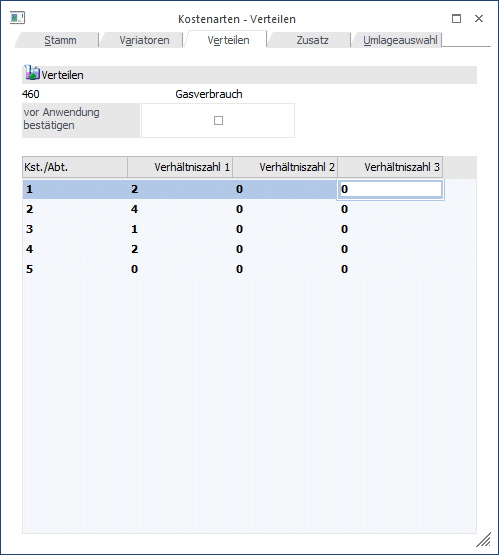
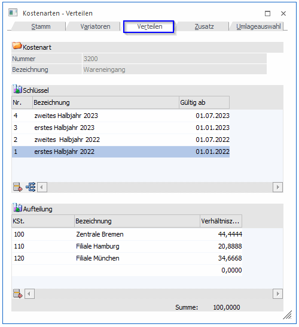
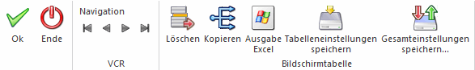
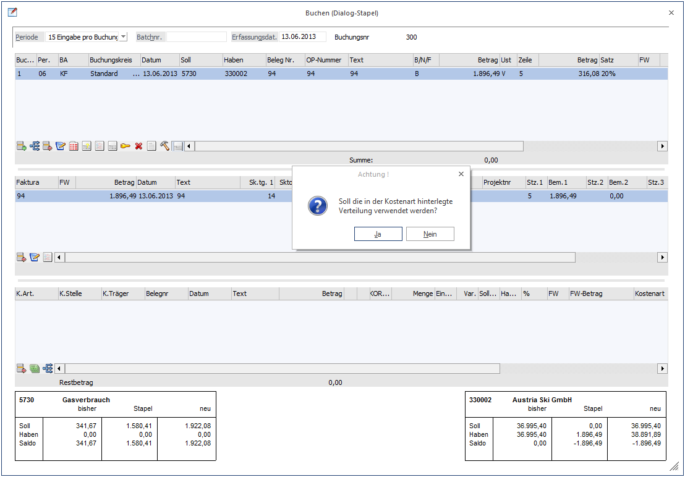

Verteilen
Wird die Option "Verteilen" in der Kostenart aktiviert kann im dafür vorgesehenen Register angegeben werden, in welchem Verhältnis die Kosten im Zuge der Kostenerfassung auf welche Kostenstellen automatisch aufgeteilt werden sollen. Die automatische Verteilung ist ein Vorschlag, der bei der Kostenerfassung immer noch manuell übersteuert werden kann.
Die automatische Verteilung hat dann Sinn, wenn eine Kostenart immer im gleichen Verhältnis auf die gleichen Kostenstellen aufgeteilt werden soll. (Bsp.: Gasverbrauch, etc.).
Hinweis
Die alternative Verhältniszahl 2 und Verhältniszahl 3 werden im Moment nicht unterstützt.

Verteilungsschlüssel
Für eine Kostenart mit der Auswahl "Verteilungsschlüssel" im Stammdatenfeld "Werte" können im Bereich "Schlüssel" mit einer Gültigkeit "ab" Schlüsselnamen vergeben werden. Für diese Schlüssel können im unteren Bereich "Aufteilung" die entsprechenden Kostenstellennummern mit Bezeichnung über den Matchcode ausgewählt werden. Dahinter wird die entsprechende Verhältniszahl eingetragen.
Bei der Kostenerfassung wird entsprechend dem Buchungsdatum die dazugehörige Aufteilung herangezogen.

Buttons

Ø OK
Durch Drücken der OK-Taste (F5) wird die neue Kostenart gespeichert.
Ø Ende
Mit Ende verlassen Sie den Bildschirm, ohne die Eingaben zu speichern (wenn Sie zuvor nicht OK gedrückt haben).
Ø Navigationsleiste (VCR)
Über die sogenannte VCR-Buttonleiste kann durch Mausklick zwischen den einzelnen Kostenstellen, bzw. Abteilungen geblättert werden:
ü  Damit kann der erste Datensatz angesprochen
werden.
Damit kann der erste Datensatz angesprochen
werden.
ü  Damit kann der vorherige Datensatz
angesprochen werden.
Damit kann der vorherige Datensatz
angesprochen werden.
ü  Damit kann der nächste Datensatz angesprochen
werden.
Damit kann der nächste Datensatz angesprochen
werden.
ü  Damit kann der letzte Datensatz angesprochen
werden.
Damit kann der letzte Datensatz angesprochen
werden.
Ø Löschen
Der Löschbutton kann für die Schlüssel, sowie für die Verteilung genutzt werden. Er steht zur Verfügung, wenn der Wertetyp 3=Verteilungsschlüssel im Stamm ausgewählt wurde.
Ø Kopieren
Ein bereits hinterlegter Schlüssel kann mit seiner Verteilung über diesen Button kopiert werden. Dazu muss die Zeile markiert sein. Anschließend den Button auslösen. Es wird die nächste freie Zeile mit der Bezeichnung "Kopie" und dem Tagesdatum angelegt. Die Bezeichnung und das Datum können entsprechend überschrieben werden, wie auch die dahinterliegenden Verteilungen.
Ø Tabelleneinstellungen speichern
Die Spalten einer Tabelle können grundsätzlich an beliebige Positionen verschoben, bzw. in der Breite entsprechend angepasst werden. Durch Anwahl des Buttons "Tabelleneinstellungen speichern" werden die Einstellungen benutzerspezifisch gespeichert und bei dem nächsten Aufruf des Programmpunktes wieder vorgeschlagen.
Ø Gesamteinstellungen speichern
Im Gegensatz zu "Tabelleneinstellungen speichern" können mit "Gesamteinstellungen speichern" mehrere Tabellenaufbauten gespeichert und nach Wunsch geladen werden. Zusätzlich werden Sonderfunktionen der Tabelle (z.B. "Spalte gruppieren") ebenfalls bei der Speicherung bedacht.
Hinweis
Wird mittels VCR-Buttonleiste in diesem Register zwischen den Stammdaten geblättert und eine Kostenart aufgerufen bei der kein Verteilen möglich ist, wird automatisch ins Register Stamm gewechselt.
Ø vor Anwendung bestätigen
Beim Buchen in der FIBU im Dialog-Stapel oder in der Kostenerfassung in der KORE kommt beim Buchen dieser Kostenart die Meldung, ob die in der Kostenart hinterlegte Verteilung verwendet werden soll. Ist dem so, dann wird die Meldung mit „Ja“ beantwortet. Wird mit „Nein“ beantwortet, wird die Verteilung manuell vorgenommen.
